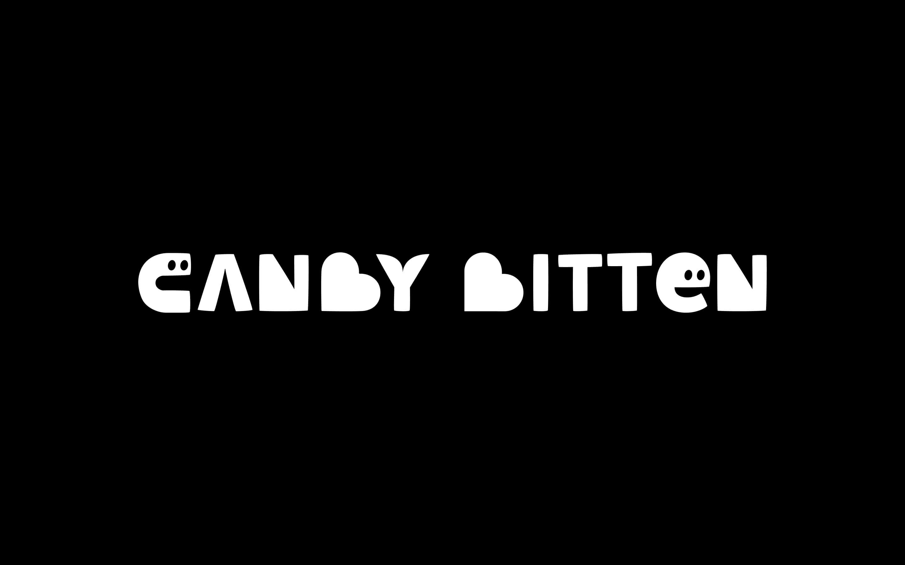
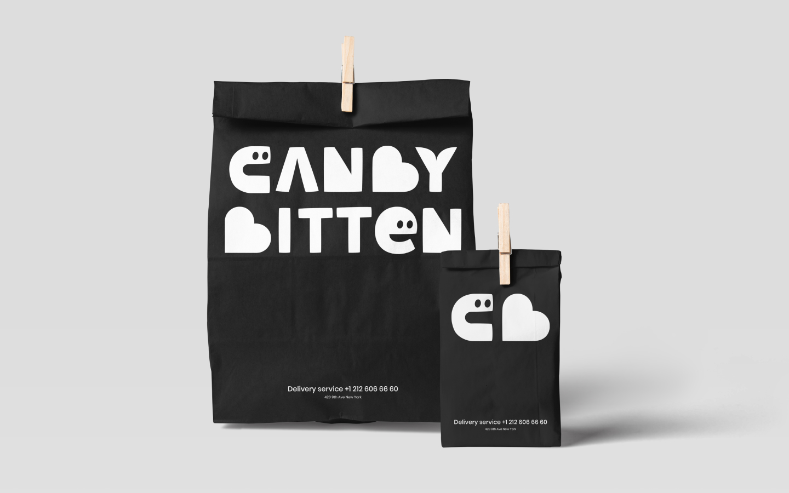
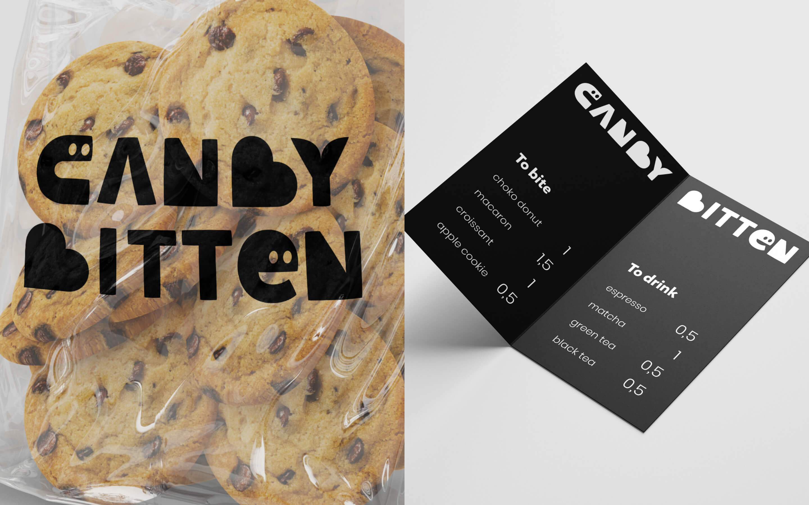
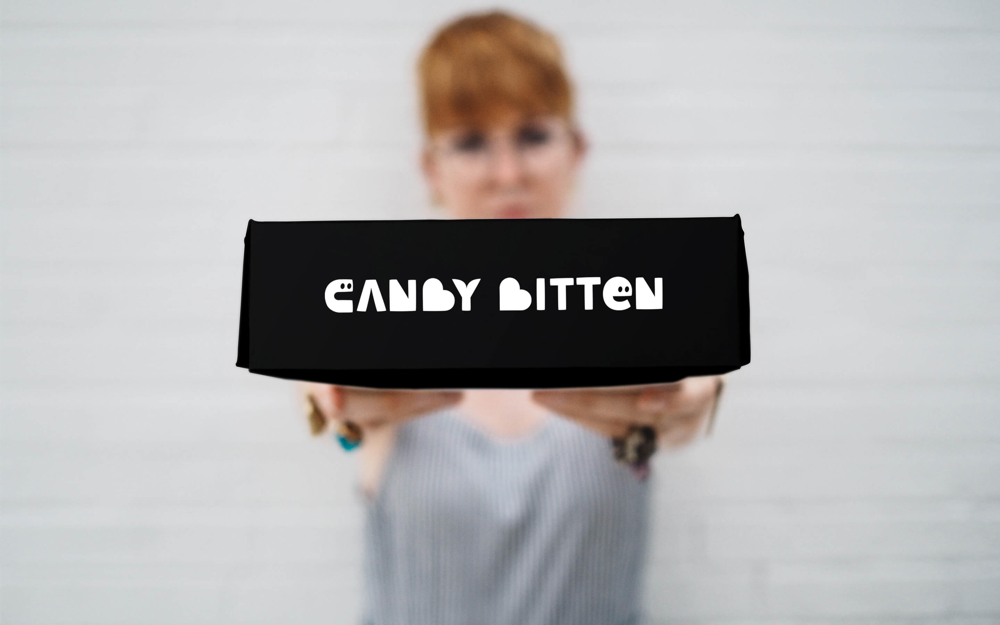
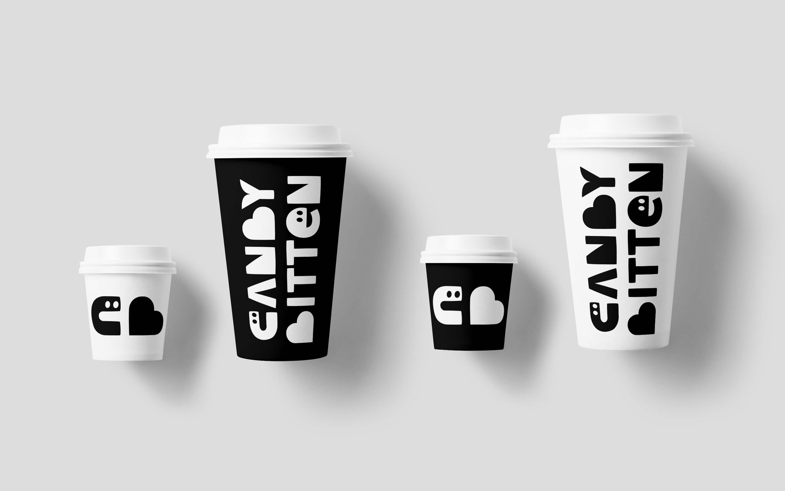
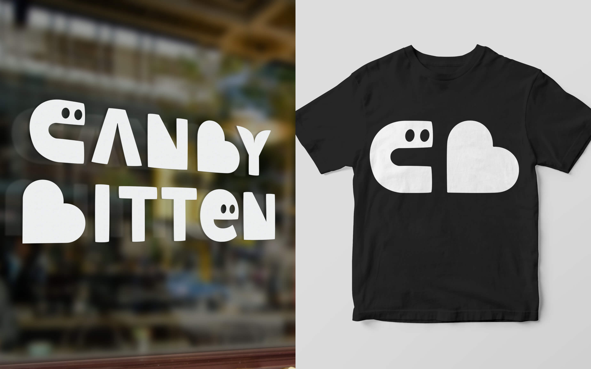

нейминг и айдентика Canby Bitten
Empty
у кондитерской, помимо вкусной продукции, должна быть и сладкая айдентика. Candy Bitten играет слогом, говорит нам не только о укушенных сладостях, но и том, что ты тоже можешь полакомиться.
голодные буквы и яркие контрасты возбуждают аппетит. логотип переносит теплоту свежей выпечки в окружающий мир, а также прекрасно смотрится на носителях.





